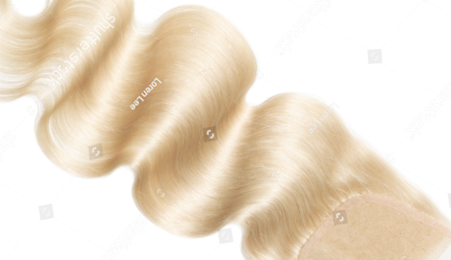

Non-dyed, non-coloured, Russian virgin hair retain qualities women in the UK and all around Europe would like to boast but often cannot for various reasons. Virgin Russian hair extensions are strong enough to stay healthy and retain stunning look even after multiple dark-to-blonde or vice versa colourings, and are so silky that shampoos and conditioners do not make them tangle after hundreds of washes.
Elizé understands: you want full control over your hairstyle. Russian virgin hair extensions give you that control. That is why we put a veto on any treatment of virgin hair except just one procedure: a single washing that is required for the sake of hygiene. That’s it. Now it’s yours, so feel free to colour your new hair, perm it, or style it they way you prefer.
Virgin Russian hair extensions are popular in the UK for a reason. Russian hair can bring you the joy of having a magnificent head of hair for a year or even longer thanks to the specific structure of the hair. One pack of blonde hair always comes from one woman which is confirmed by natural variance in weight and hair density.
We process every order for virgin hair extensions strictly individually. Genuine blonde Russian hair is extremely demanded and varies slightly in tones. This means we cannot guarantee that a specific colour is available at any given time. So don’t hesitate to contact us to secure a specific tone now.